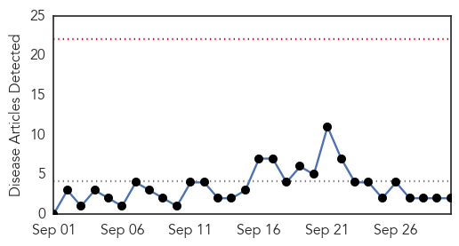
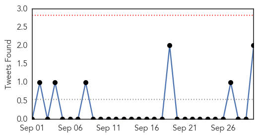
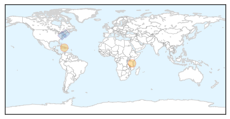
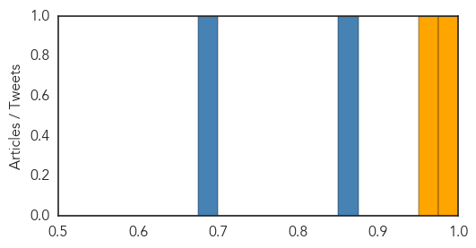
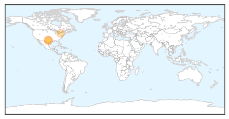

Cholera
30-Day Web Trend
0 alerts, 0 warnings

30-Day Twitter Trend
0 alerts, 0 warnings

Article Locations
Article Confidences
Top Articles:
Top Tweets:
- 0.866
- RT: working against cholera last week. lets stop transmission and end cholera deaths! @SecGTFCC http://t.c…
- 0.680
- MarioJoseph pale sou Wikileaks jistis pou viktim cholera fomasyon avoka progresis aswe a 8h Teletimoun
West Nile Virus
30-Day Web Trend
0 alerts, 0 warnings

30-Day Twitter Trend
0 alerts, 0 warnings

Article Locations
Article Confidences

Top Articles:
Top Tweets:
-
No tweets found for Sep 30, 2015